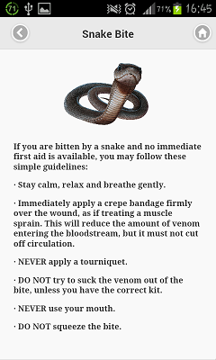

- About
- How it works
- KLOK team
- Contact-Us
- Download
ABOUT KLOK
KLOK is a combination of tour guide and a first aid assist. With it , we are trying to solve the problem we have in our tourism industry,that is, we want to give our tourists enough information and tips to survive the safari, straight from their smartphones. That is, how to react when you encounter a dangerous animal or an allergic/poisonous plant and also the first aid tips.HOW IT WORKS
 KLOK is your Botswana Safari friend. It basically informs you about the dangerous animals and plants of the safari. Suppose you accidently get bitten by a snake and you are clueless on what to do, do not panick, Klok tours has all the resources you need. So just open your KLOK Tours go to Safari tips then WAllahh you have all the information on what to do about that snake bite :)! You are rescued...